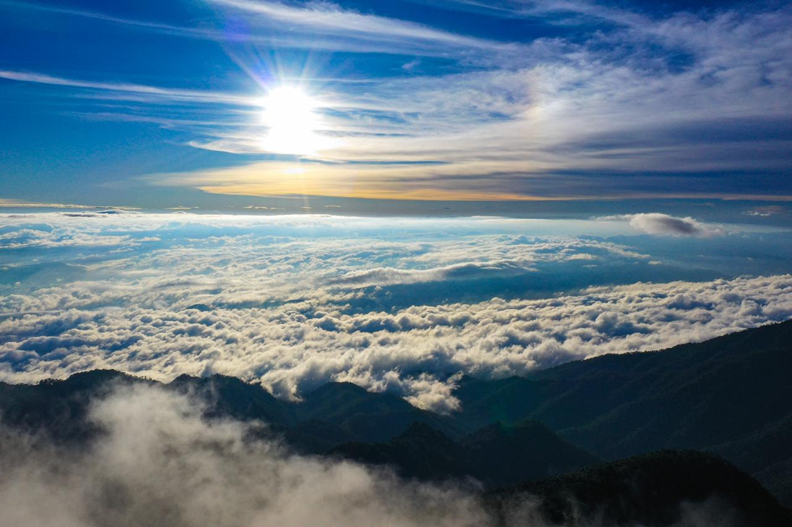
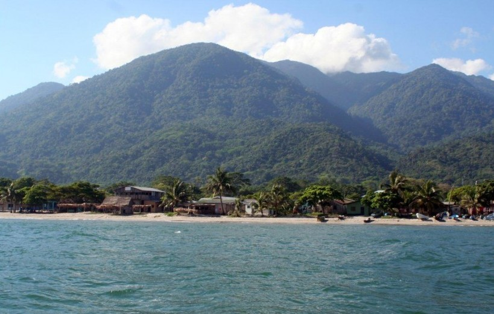

Esta ruta está dirigida a los visitantes interesados en la
naturaleza, senderismo, observación de fauna y exploración
de algunos de los principales bosques y montañas de Honduras.
Parque Nacional Celaque

El Parque Nacional Celaque se encuentra en el departamento
de Lempira y protege extensas áreas de bosque nublado.
En su territorio se encuentra el Cerro Las Minas,
considerado el punto más alto de Honduras.
Principales atractivos
- Bosque nublado
- Cerro Las Minas
- Senderismo
- Campamentos
- Observación de flora y fauna
Dificultad de acceso: Alta para llegar
hasta la cumbre. El acceso al centro de visitantes es más
sencillo, pero los senderos de montaña requieren buena
condición física.
Distancias aproximadas hacia el Parque Nacional Celaque
| Ciudad de origen |
Distancia aproximada |
Altitud máxima |
Tiempo estimado |
| Tegucigalpa |
265 km |
2,849 m s. n. m. |
4 horas 30 minutos |
| San Pedro Sula |
205 km |
2,849 m s. n. m. |
3 horas 30 minutos |
Parque Nacional Pico Bonito

Pico Bonito se encuentra en el departamento de Atlántida,
cerca de la ciudad de La Ceiba. Es una de las áreas protegidas
más importantes de Honduras y posee bosques tropicales,
montañas, ríos y una gran diversidad de especies.
Principales atractivos
- Senderismo
- Bosque tropical
- Observación de aves
- Ríos y cascadas
- Rafting y actividades de aventura
Dificultad de acceso: Media.
Algunas áreas son de fácil acceso, mientras que los senderos
de montaña requieren mayor preparación física.
Distancias aproximadas hacia Pico Bonito
| Ciudad de origen |
Distancia aproximada |
Altitud máxima |
Tiempo estimado |
| Tegucigalpa |
410 km |
2,435 m s. n. m. |
6 horas 15 minutos |
| San Pedro Sula |
210 km |
2,435 m s. n. m. |
3 horas 15 minutos |
| La Ceiba |
25 km |
2,435 m s. n. m. |
40 minutos |